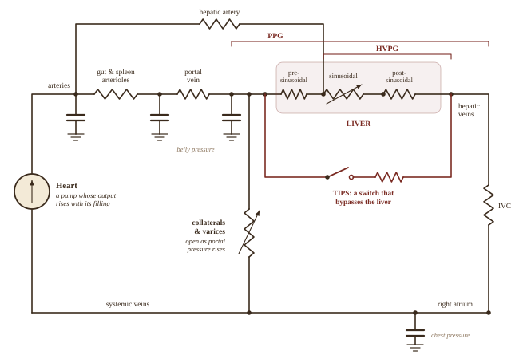

Pressure, measured from first principles
Around 1710, in his parsonage at Teddington, the clergyman and naturalist Stephen Hales (1677–1761) made the first recorded measurement of blood pressure. He opened the crural artery of a mare and fitted it, through brass pipes, to an upright glass tube nine feet long. The blood rose 8 feet 3 inches above the level of her heart, and rose and fell two to four inches with every beat.
He published the work in 1733 as Haemastaticks, the second volume of his Statical Essays. In it he likened the elastic arteries to the air chamber of a fire engine, which turns a pump's strokes into a steady jet. Otto Frank put that idea into equations in 1899 as the Windkessel; models of the circulation still use it.
A physiology model of blood pressure and flow in plain JavaScript. It treats the circulation as a network of vessels, each with its own resistance and stretch. A Frank–Starling heart pumps, the arterial pulse follows the Windkessel, and breathing moves pressure in the chest and belly. Its first module is the portal circulation, from the gut through the liver to the heart, and it follows disease over weeks: varices, collateral veins, ascites, bleeding, and the response to drugs, TIPS and other shunts. Lung and brain modules are planned on the same core. Stored results guard every number against accidental change.
Every pressure, flow, Doppler trace and complication in the Portal Pressure Simulator is computed by Hales Engine, running in the background while the screen draws. The app carries an exact, version-pinned copy of the engine, so a given release always gives the same answers.
Overleaf: the engine drawn as a circuit, and what the simulator lets you do.
Pressure is voltage, flow is current
Physiologists have long drawn the circulation as an electrical circuit, and Hales Engine is built the same way. Blood obeys the rule current does: the pressure drop across a vessel equals the flow through it times its resistance (ΔP = Q × R). Below is the portal part of the engine, simplified; the full model has about fifty such points.

Cirrhosis turns up the sinusoidal resistor, so pressure builds upstream in the portal vein. As it rises, the collaterals open and steer blood around the liver into the systemic veins; varices lie on that path. A TIPS closes the switch and lets blood bypass the liver. The PPG spans the whole liver. The HVPG spans only the resistors after the sinusoids, because the wedged catheter reads sinusoidal pressure, so it misses presinusoidal disease.
The Portal Pressure Simulator is a teaching app that runs this engine live on a drawn patient. Change the disease, give a drug, band a varix, drain ascites or place a TIPS, and the pressures, Doppler waveforms and complications respond. Guided lessons cover the circulation, the liver lobule, HVPG and EUS-PPG, varices and bleeding, ascites, TIPS and shunts, Doppler and beta-blockers, across twenty patients from healthy to Budd–Chiari and right heart failure.
Educational simulation. Simplified model with illustrative values; not for diagnosis or treatment decisions.